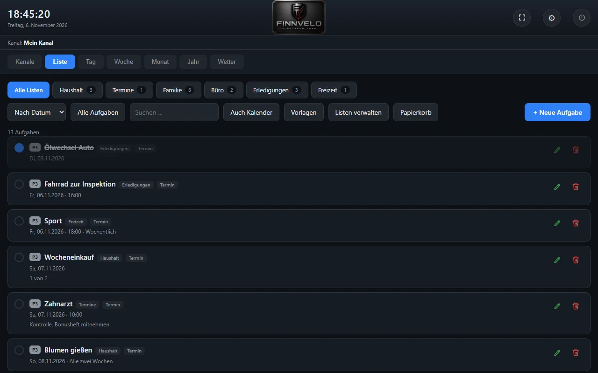
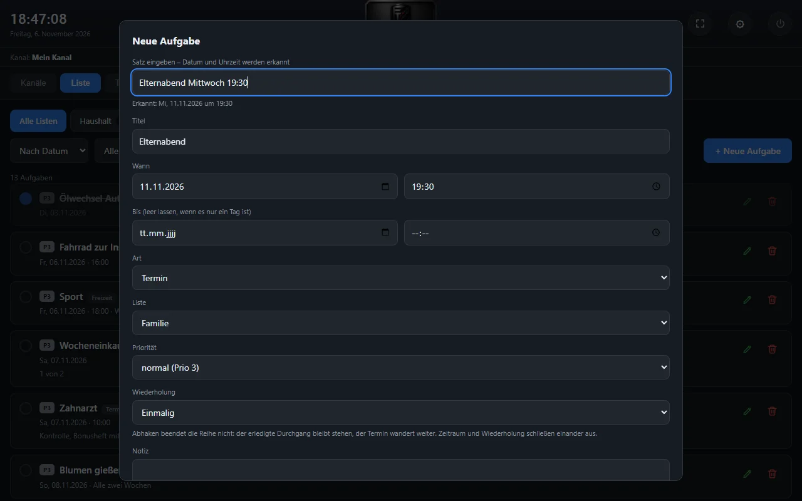
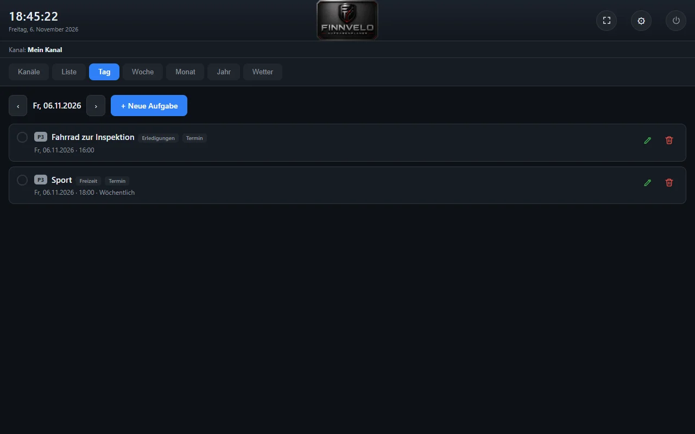
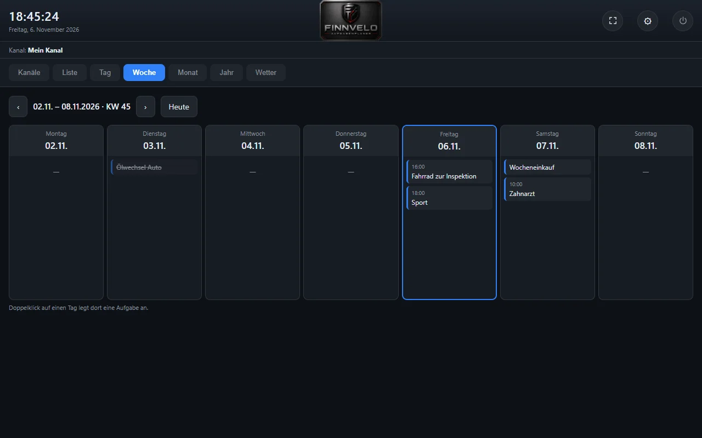
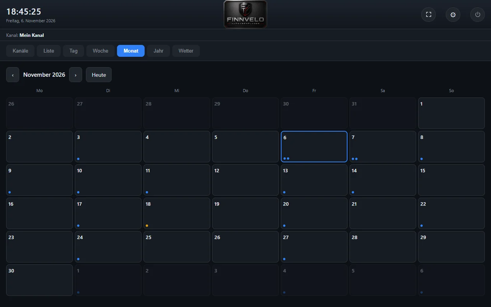
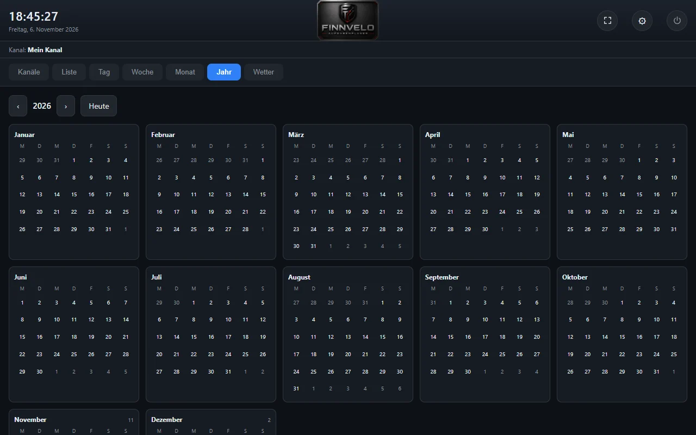
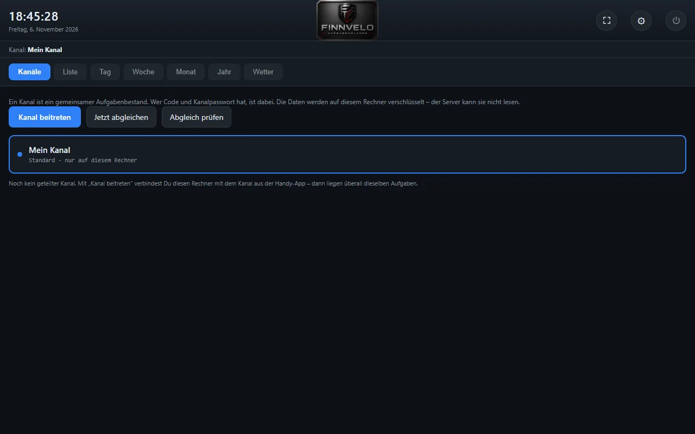
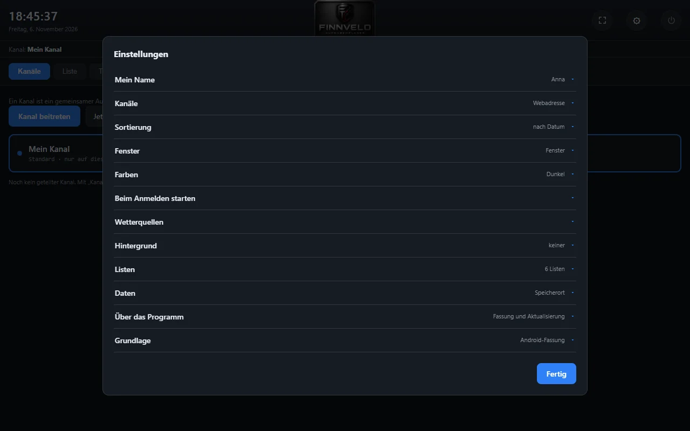
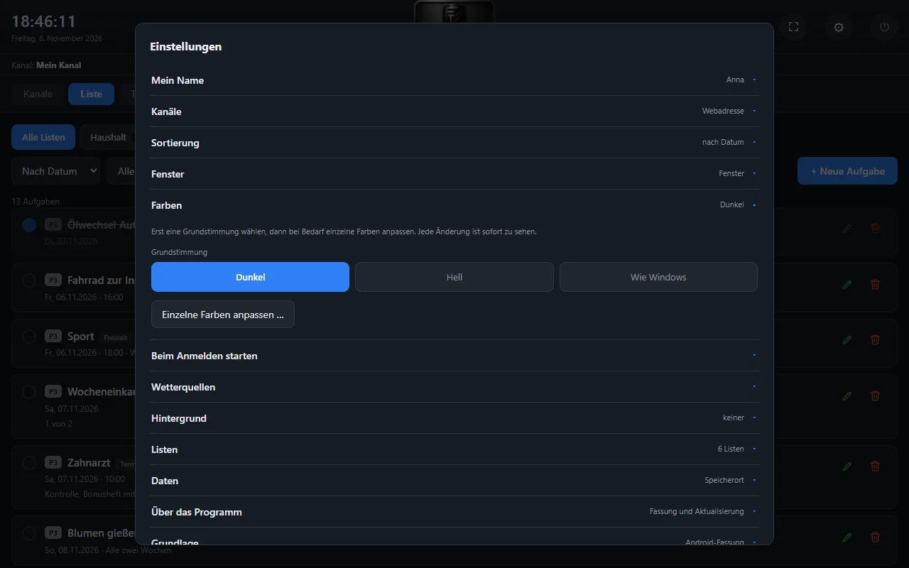

Aufgaben · Termine · Erinnerungen
Finnvelo Aufgabenplaner
Android-AppDer Finnvelo Aufgabenplaner ist ein Aufgaben- und Terminplaner für Android und Windows. Ein kurzer Satz genügt – „morgen um 10 Uhr Zahnarzt“ –, und die App erkennt Datum und Uhrzeit von selbst. Dazu Kalenderansichten vom Tag bis zum Jahr, zuverlässige Erinnerungen und gemeinsame Listen, die verschlüsselt zwischen den Geräten abgeglichen werden.
Beschreibung
Aufgaben werden so eingegeben, wie man sie auf einen Zettel schreiben würde. Aus „übermorgen Rasen mähen“, „Urlaub vom 3. bis 7. September“ oder „jährlich am 3. Mai Versicherung prüfen“ liest die App Titel, Datum, Uhrzeit, Zeitraum und Wiederholung selbst heraus. Was sie nicht erkennt, lässt sich in der Bearbeitungsmaske ergänzen.
Den Überblick geben eine Aufgabenliste und Kalenderansichten für Tag, Woche, Monat und Jahr – mit Kalenderwochen und den Feiertagen deines Bundeslandes. Erinnerungen melden sich pünktlich, auf Wunsch mit eigenem Vorlauf, Ton und Vibration je Termin. Listen lassen sich mit anderen teilen und bleiben dabei Ende-zu-Ende verschlüsselt.
Jede Aufgabe gehört zu einer Liste – etwa Haushalt, Familie oder Büro – und bekommt eine Art (Termin oder Frist), eine Priorität von 1 bis 3, auf Wunsch eine Wiederholung von täglich über werktags bis jährlich, eine Notiz, einzelne Arbeitsschritte und Bilder als Anhang. Abgehakte Termine bleiben im Kalender stehen, damit sich später nachlesen lässt, wann was erledigt wurde.
Gemeinsame Kanäle verbinden mehrere Geräte und Personen: Wer einen Kanal anlegt, gibt den Code weiter, die anderen treten bei. Inhalte werden auf dem Gerät verschlüsselt, bevor sie über den Server gehen. Die Windows-Fassung zeigt dieselben Kanäle und Listen – so tippst du am Rechner und lässt dich am Handy erinnern.
Dazu kommen Wecker, Timer, Stoppuhr und Weltuhren, eine Wetteransicht mit vier unabhängigen europäischen Wettermodellen und ein Weg, Termine aus geschickten Nachrichten zu übernehmen: Text einfügen, die App erkennt die Termine und legt sie im Planer an.
Eingabe in einem Satz
Datum, Uhrzeit, Zeitraum und Wiederholung werden direkt aus dem eingetippten Text erkannt.
Liste und Kalender
Aufgabenliste sowie Tages-, Wochen-, Monats- und Jahresansicht – mit Kalenderwochen und Feiertagen.
Erinnerungen und Wecker
Erinnerungen mit eigenem Vorlauf, Ton und Vibration – dazu Wecker, Timer, Stoppuhr und Weltuhr.
Gemeinsame Kanäle
Listen mit Familie, Freunden oder Kollegen teilen – Ende-zu-Ende verschlüsselt und ohne Konto. Wer welche Liste sehen darf, legst du selbst fest.
Wetter zum Termin
Vorhersage aus vier unabhängigen Wettermodellen. Stimmen sie überein, ist die Vorhersage verlässlich – gehen sie auseinander, siehst du das auch.
Arbeitsschritte und Anhänge
Größere Aufgaben in einzelne Schritte zerlegen und Bilder direkt an die Aufgabe hängen.
Vorlagen und Papierkorb
Wiederkehrende Aufgaben als Vorlage speichern. Gelöschtes bleibt 30 Tage im Papierkorb und lässt sich zurückholen.
Auch für Windows
Die PC-Fassung zeigt dieselben Kanäle und Listen – am Rechner tippen, am Handy erinnern lassen.
Termine aus Nachrichten
Eine geschickte Nachricht wie „Zahnarzt Montag 10 Uhr“ einfügen – die App erkennt die Termine und übernimmt sie.
App-Sperre
Die Android-App lässt sich mit einer Sperre schützen.
Eigene Farben und Hintergründe
Farbwelten und einzelne Farben, Muster wie Pfoten, Blumen oder Sterne oder ein eigenes Bild als Hintergrund.
Fristen und Prioritäten
Termine und Fristen getrennt, drei Prioritätsstufen, sortiert nach Datum oder Titel.
Oberfläche
Die folgenden Ansichten zeigen die Windows-Fassung 3.11 mit erfundenen Beispielaufgaben in sechs Listen. Ein Klick auf ein Bild öffnet es groß.
Aufgaben




Kalender, Kanäle und Einstellungen





Einstellungen – das kannst du anpassen
Ein Überblick über die Einstellungen der Android-App und der Windows-Fassung:
Name und Kanäle
- Mein NameSo erscheinst du in geteilten Kanälen; ohne Eingabe nimmt die App den Gerätenamen.
- KanäleBeitreten, abgleichen, prüfen und die Webadresse des Servers.
Darstellung
- FarbweltIn der App antippen, und sie färbt sich sofort um; am PC dunkel, hell oder wie Windows, dazu einzelne Farben.
- HintergrundMuster wie Pfoten, Blumen, Herzen oder Sterne, Motive oder ein eigenes Bild.
- FensterAm PC als Fenster oder im Vollbild, Start beim Anmelden.
Aufgaben und Listen
- ListenAnlegen, umbenennen, einfärben – die Aufgaben wandern beim Umbenennen mit.
- SortierungNach Datum oder Titel, auf Wunsch nur offene Aufgaben.
- Termine übernehmenText aus einer Nachricht einfügen, die App erkennt die Termine.
Erinnerungen
- BenachrichtigungstonTon auswählen und probehören.
- Wie lange der Ton spieltEinmal oder über mehrere Sekunden, damit er nicht untergeht.
- Ton auch bei stummem KlingeltonNutzt die Alarmlautstärke.
Sicherheit und Wetter
- App-SperreDie App vor fremden Blicken schützen.
- WetterquellenVier europäische Wettermodelle, einzeln an- und abwählbar.
Daten und Aktualisierung
- PapierkorbGelöschtes bleibt dreißig Tage und lässt sich zurückholen.
- Vollständige SicherungAufgaben, Listen, Weckrufe und Weltuhren in einer Datei – beim Einspielen alles ersetzen oder dazunehmen.
- TeilenAlle Einträge als Übersicht an Messenger oder E-Mail weitergeben.
- UpdatesSelbst nach neuen Fassungen suchen lassen oder von Hand.
Besondere Vorteile
- Aufgaben in einem Satz erfassen – Datum und Uhrzeit erkennt die App selbst.
- Listen teilen mit Ende-zu-Ende-Verschlüsselung.
- Kostenlos, ohne Konto und ohne Anmeldung.
- Kalender, Erinnerungen, Wecker und Wetter in einer App.
- Als Android-App und als Windows-Programm.
- Vollständige Sicherung und eigene Update-Suche direkt in der App.
- Termine aus geschickten Nachrichten übernehmen.
- Wetter aus vier unabhängigen Modellen.
Zielgruppe
Für alle, die Aufgaben und Termine schnell festhalten wollen, ohne sich durch Formulare zu tippen – allein oder gemeinsam mit Familie, Freunden oder Kollegen, die dieselben Listen im Blick behalten sollen.
- Familien, die Termine, Einkäufe und Aufgaben gemeinsam planen.
- Wer Fristen wie Steuererklärung oder Reisepass nicht verpassen will.
- Wer am PC plant und unterwegs am Handy erinnert werden möchte.
Daten und Datenschutz
Aufgaben, Listen und Einstellungen liegen auf deinem Gerät – am PC als Dateien im Datenordner des Programms. Es gibt kein Konto und keine Anmeldung.
Ins Netz geht der Planer nur für geteilte Kanäle, für das Wetter und für die Suche nach neuen Fassungen. Geteilte Inhalte werden auf dem Gerät verschlüsselt, bevor sie über finnveloprogramme.com gehen – der Server sieht keine lesbaren Inhalte. Das Wetter kommt von den gewählten Wettermodellen, dafür wird nur der Ort übertragen.
Download (Android-App)
App herunterladen
Die App ist rund 17 MB groß. Eine Internetverbindung braucht sie nur für geteilte Listen und die Wettervorhersage – Eingabe, Kalender und Erinnerungen funktionieren auch offline.
Aufgabenplaner herunterladen (17 MB)Installation
Da die App nicht aus dem Play Store kommt, muss Android beim Öffnen der geladenen Datei einmalig die Installation aus unbekannter Quelle erlauben. Zeigt Play Protect eine Meldung, lässt sich die Installation über „Weitere Details“ fortsetzen. Die App ist mit einem eigenen Zertifikat signiert.
Updates findet die App selbst über „Einstellungen → Nach Updates suchen“.
Download (PC-Version)
Programm herunterladen
Installationsprogramm für Windows. Die PC-Fassung nutzt dieselben Kanäle wie die App, sodass Aufgaben auf Handy und Rechner gleich aussehen. Wecker und Gerätekalender gibt es nur in der Android-App.
PC-Version herunterladenHinweis
Windows meldet bei unbekannten Programmen einen Warnhinweis. Über „Weitere Informationen“ → „Trotzdem ausführen“ lässt sich der Start fortsetzen.
Finnvelo unterstützen
Alle Finnvelo-Programme sind kostenlos. Wenn sie dir helfen und gefallen, freue ich mich sehr über eine kleine Spende – sie hält die Weiterentwicklung am Laufen.
Mit PayPal spendenSichere Abwicklung über PayPal.